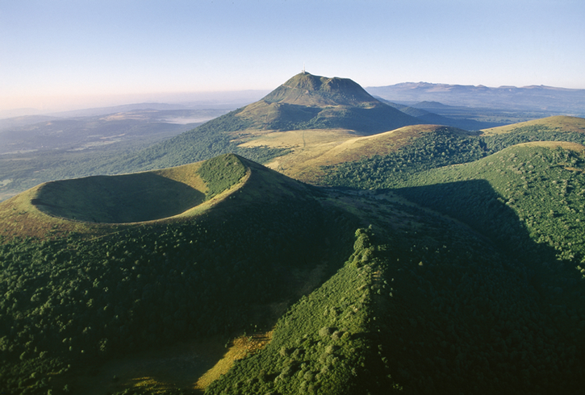
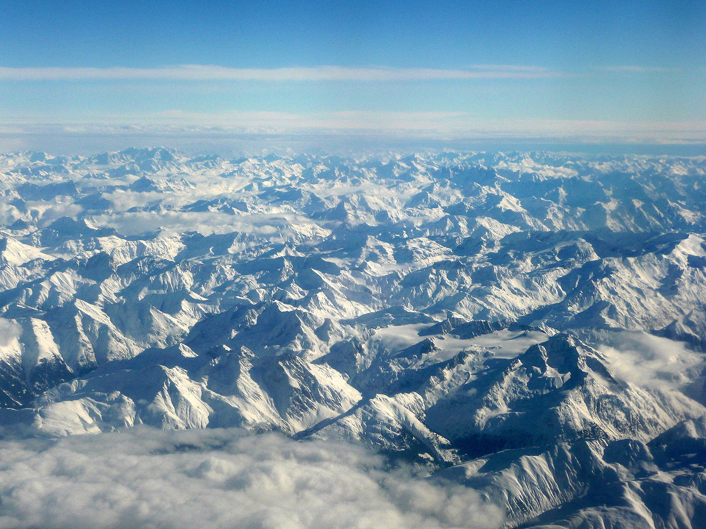
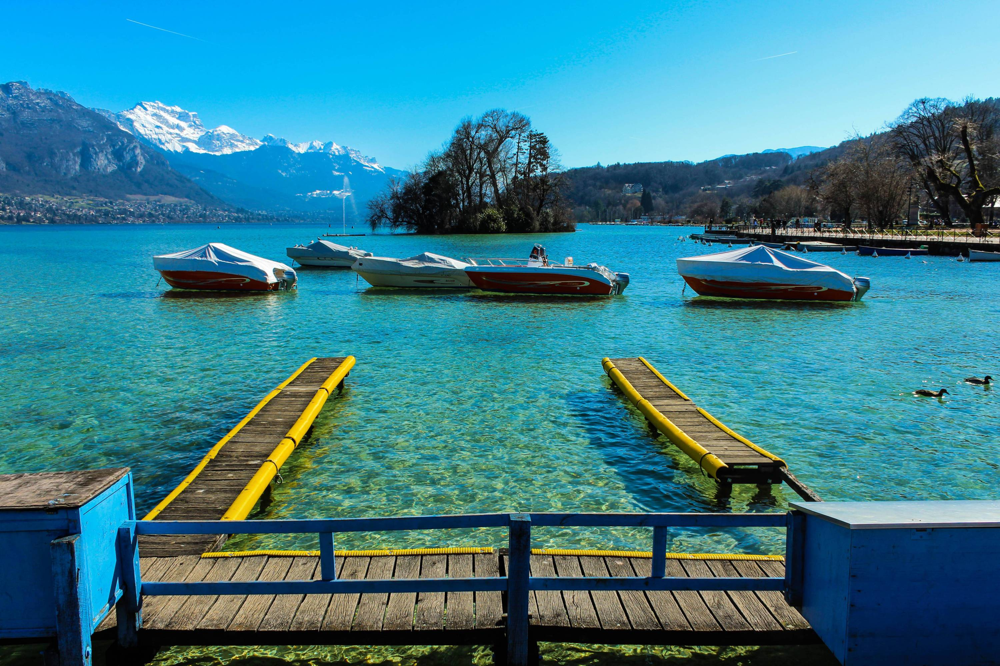

La région Auvergne-Rhône-Alpes, 3ème région de France métropolitaine en terme de superficie, peut se targuer d’avoir un des relief les plus variés de France.
Volcans, Montagnes ou encore Lacs : découvrez avec nous ce qui constitue ce merveilleux paysage.
La Chaîne des Puys

Cette chaîne de volcans est situé dans le département du Puy du Dôme sur une étendue de 4 à 5 km de large pour une longueur de 45 km ! Comptabilisant un ensemble
de 80 volcans, elle constitue une des chaînes de volcans les plus massives d’Europe. Le point culminant de la chaîne se trouvant sur le “Puy de Dôme” à plus de 1.4km
de hauteur. La chaîne des Puys , grâce au patrimoine historique qu’elle représente , est candidate à la liste du patrimoine mondial de l’UNESCO.
Il vous sera possible de visiter ce paysage à couper le souffle par le biais d’un sentier de grande randonnée, le GR4 , qui relie l’Océan Atlantique à la Méditerranée.
Pour plus d’informations :
www.gr-infos.com/ GRATUIT
Les Alpes
La chaîne de Montagne des Alpes s’étendant sur une surface de 190 959 km² sur 8 pays d’Europe se trouve à 20% dans la Région-Rhône-Alpes. La région accueille
également en son sein le “Mont-Blanc” l’un des sommets les plus hauts du monde et le point culminant des Alpes à une hauteur de 4,8 km. Paysage d’une beauté émouvante,
la zone des Alpes propose une diversité de faune et de flore impressionnante. Entre Pics et Cols venez découvrir un décor merveilleux que vous n’oublierez jamais.
En Auvergne-Rhône-Alpes, vous aurez accès à de nombreux circuits d’alpinisme afin de profiter d’un panorama unique.

Pour plus d’informations :
https://www.terdav.com › Haute montagne
A partir de 820,00€ TTC
Le Lac d'Annecy

Le “lac bleu” d’une superficie de 27,59 km² dans le département de la Haute-Savoie est un des lacs les plus beaux à voir en France. En effet la pureté de l’eau
ainsi que sa transparence vous offre un spectacle époustouflant. La commune d’Annecy vous propose également diverses activités intéressantes sur le lac telles que du
kitesurf, du kayak ou encore du pédalo.
Venez découvrir un endroit inoubliable et passez un agréable moment en famille.
Pour plus d’informations :
http://www.tourisme-annecy.net/decouvrir/activites-sportives
La région Auvergne-Rhône-Alpes propose un des patrimoines naturels les plus variés de France. Randonnées, Ski ou encore Sports nautiques, la région vous propose
d’excellentes activités afin de découvrir dans toute sa grandeur le paysage alpin. On n’attend plus que vous !